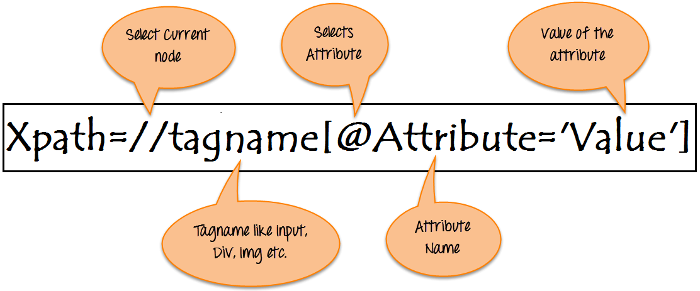

Aula 5 - Selenium e BeautifulSoup
Webdrivers
- Chromedriver:
-
Geckodriver:
- https://github.com/mozilla/geckodriver/releases
- IEDriver:
- https://www.selenium.dev/downloads/
- Operadriver:
- https://github.com/operasoftware/operachromiumdriver/releases
- Edgedriver:
- https://developer.microsoft.com/en-us/microsoft-edge/tools/webdriver/
Selenium
-
Instalação do Selenium:
-
Importação da biblioteca:
-
Chamar navegadores com o(s) webdriver(s):
-
Maximizar a janela do navegador:
-
Colocar um tempo para carregamento - IMPLÍCITO:
-
Colocar um tempo para carregamento - EXPLÍCITO:
-
Acessar um site:
-
Buscar elementos na página:
#Buscar pela class do elemento driver.find_element_by_class_name('nav-input.nav-progressive-attribute') #Buscar pelo id do elemento driver.find_element_by_id('twotabsearchtextbox') #Buscar pela tag do elemento driver.find_element_by_tag_name('h1') #Buscar pelo xpath do elemento driver.find_element_by_xpath('//input[@id="twotabsearchtextbox"]') #Buscar pelo texto completo do elemento: driver.find_element_by_link_text('Todos') #Buscar pelo texto parcial do elemento: driver.find_element_by_partial_link_text('endereço').click() #Buscar pelo seletor CSS: driver.find_element_by_css_selector('#searchDropdownBox') driver.find_element_by_css_selector('[name=url]') driver.find_element_by_css_selector('.nav-search-dropdown.searchSelect.nav-progressive-attrubute.nav-progressive-search-dropdown') -
Digita um valor no site:
-
Apagar um campo escrito:
-
Clicar em um elemento:
-
Movimentar a tela para um elemento (scroll):
-
Extrair texto:
-
Coletar atributos do HTML:
-
Tirar print de um elemento ou do site:
-
Selecionar uma opção no Dropdown:
from selenium.webdriver.support.ui import Select dropdown = Select(driver.find_element_by_id('searchDropdownBox')) #Selecionar pelo texto presente dropdown.select_by_visible_text('Computadores e Informática') #Selecionar pelo atributo value do HTML dropdown.select_by_value('search-alias=computers') #Selecionar pelo número dele na lista dropdown.select_by_index(11) -
Fechar aba do navegador:
-
Fechar navegador e seu webdriver:
BeautifulSoup
-
Importar biblioteca para "baixar" o HTML da página:
-
Efetuar requisição da página HTML:
-
Resolvendo problema de certificado SSL (se houver):
```python import ssl ssl._create_default_https_context = ssl._create_unverified_context ```- Outras formas de resolver o erro de certificado SSL: https://exerror.com/urlopen-error-ssl-certificate_verify_failed-certificate-verify-failed/
- Instalar o “parser” do HTML:
-
Importar biblioteca do “parser” de HTML:
-
Formatar o código de HTML para “parsear”:
-
ALTERNATIVA de biblioteca para "baixar" o html da página:
-
Instalação da "lib":
```bash pip install requests ``` -
Importação da “lib”:
```python import requests ``` -
Efetuar requisição da página HTML:
```python html = requests.get('https://quotes.toscrape.com/') ``` -
Formatar o código de HTML para “parsear”:
```python soup = BeautifulSoup(html.text, 'html.parser') ``` -
Acessar uma TAG diretamente:
-
Acessar o PRIMEIRO elemento através dos seus atributos básicos (ID ou CLASS):
-
Buscar algum elemento através do seu texto (entre as TAGS):
-
Buscar mais de um elemento na página:
soup.find_all(class_='text') # ou soup.find_all('span', {'class': 'text'}) # output: [<span class="text" itemprop="text">“The world as we have created it is a process of our thinking. It cannot be changed without changing our thinking.”</span>, <span class="text" itemprop="text">“It is our choices, Harry, that show what we truly are, far more than our abilities.”</span>, ... ] -
Ver atributos da TAG de HTML:
-
Pegar atributos da TAG de HTML:
Xpath

- Guia de criação de Xpath: https://www.guru99.com/xpath-selenium.html
- Extra: https://devhints.io/xpath
CSS Selector:
- Guia: https://www.w3schools.com/cssref/css_selectors.asp
- Cheat Sheet: https://devhints.io/css
- Extra: https://www.freecodecamp.org/news/css-selectors-cheat-sheet/